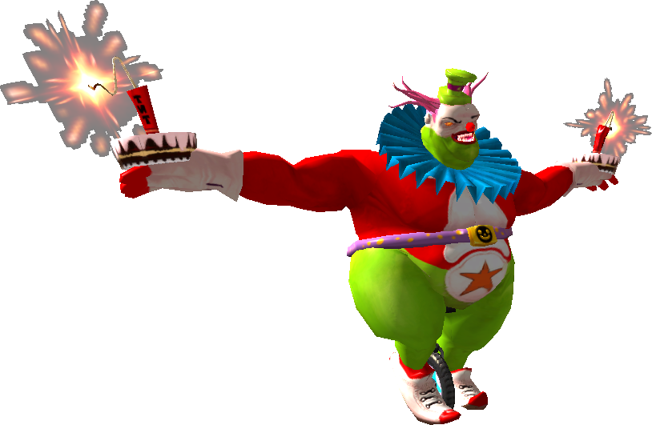
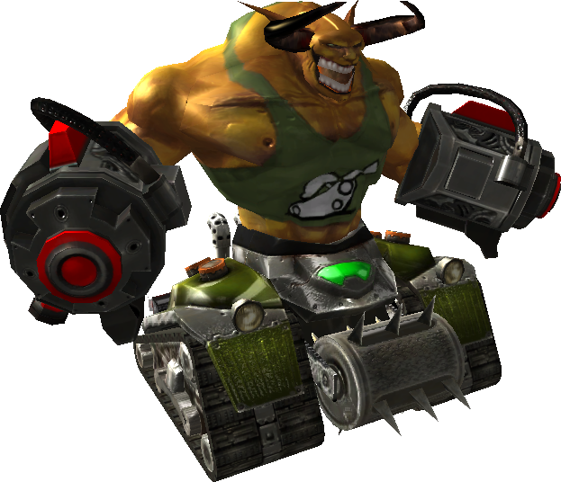
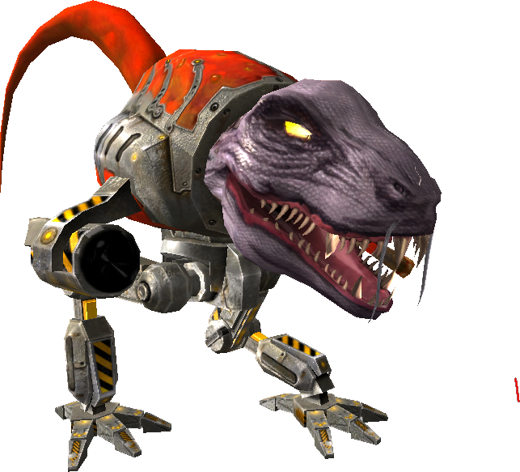
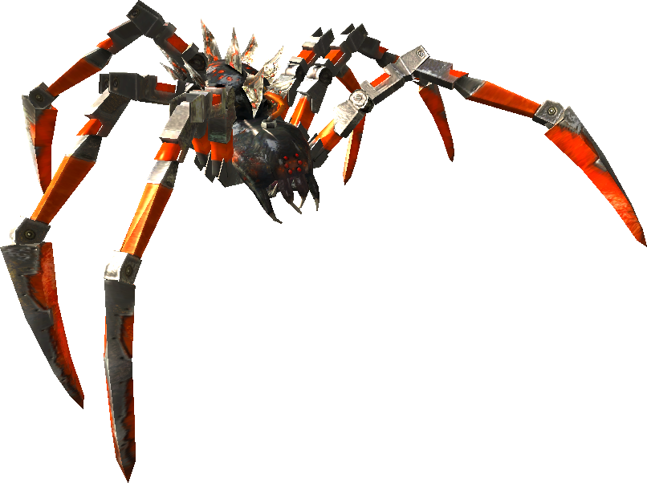

7.7 MENTAL INSTITUTION
Chapter 11 - After moving wall sequence
Chapter 12 - Before advacing into yard with turrets
Chapter 13 - Before fight in the yard with turrets
Chapter 14 - In final yard before it opens
Chapter 15 - Final yard before fight with spiders
Chapter 16 - Last Fight Chapter
Estimated timesave over 2.080: 15+ minutes
Video of Chapter 11 skip: (4:58:40)
Map: (Click to expand)

Chapter 11 - After moving wall sequence
Finished by hitting a trigger, meaning one can skip from chapter 1 straight to 12.
Chapter 12 - Before advacing into yard with turrets
Tanks spawn immediately. Generals spawn 1 second later. Kleers spawn 2 seconds after starting the chapter. Kill these.
Chapter 13 - Before fight in the yard with turrets
Move forward into the yard to start the fight. The chapter consists of two phases.
First phase
The first phase involves three kinds of enemies: Turrets, clowns, and kleer.
Turrets
- After 5 seconds, the first group of turrets will spawn. Kill these at no rush.
- After 10 more seconds, the second group will spawn. Kill these at no rush.
- After 10 more seconds, the third group spawns. Kill the left turret first, facing away from Mental.
- Upon killing three groups of turrets, clowns will spawn.
- The left turret respawns 22 seconds after it has been killed, the right 20 seconds after it’s been killed. This is turret group five.
- 10 seconds after the third group spawned, the fourth group spawns.
- These turrets respawn after 15 seconds. This is turret group six.
- Upon killing six groups of turrets, kleers will spawn. From this point on, turrets may be ignored.
If turret group 3 is not killed within 1.5 seconds of its spawn effect beginning, which lasts 0.9 seconds, the spawning of turret group 5 is delayed. The same applies for group 4, delaying group 6.
Clowns and Kleer
Once they start spawning, all clowns and all kleer must be killed.
| Chapter 13 Phase 1 Clowns  | |
|---|---|
| Spawn type | Maintain Group |
| Spawn effect configuration | None |
| Launcher | Random Cone |
| Spawn formation | Fixed Line |
| Total Number | 35 |
| Number in group | 4 |
| Initial delay | 0 |
| Single delay | 2 |
| Group delay | 1 |
| Spawnee death delay | 0 |
| Total spawntime | 68 (2*34) |
| Total bugged spawntime | 65 (2*31 + 3*1) |
Chapter 13 Phase 1 Kleer  | |
|---|---|
| Spawn type | Maintain Group |
| Spawn effect configuration | None |
| Launcher | Random Cone |
| Spawn formation | Fixed Line |
| Total Number | 20 |
| Number in group | 3 |
| Initial delay | 0 |
| Single delay | 2 |
| Group delay | 1 |
| Spawnee death delay | 0 |
| Total spawntime | 38 (2*19) |
| Total bugged spawntime | 36 (2*17 + 1*2) |
In short: Kill 20 Kleer & 35 Clowns. Kill Turrets until those spawn. Clowns are the bottleneck despite spawning earlier, but only slightly.
Second phase
The second phase is a bit more involved. The wall will lower and a group of enemies will spawn, among which 8 Kleer. These Kleer must be killed to trigger the next fight. Two seconds before the kleer spawn, the ground will rumble, signifying the imminent lowering of the wall.
The next fight consists of various relevant enemies.
- Wall Kleer: Two spawners of Kleer will be thrown over the side walls. There will be a total of 58 Kleer thrown over the walls. All must be killed.
- Tanks: Tanks started spawning already as the wall came down.
- T-Mech: Killing all tanks will trigger T-Mech spawns. All T-Mech must be killed.
- Tank Generals: Upon killing 6 groups (18 units) of the left wall Kleer (facing away from the pyramid), two Tank Generals will spawn. These must also be killed
| Chapter 13 Phase 2 Wall Kleer (per side) | |
|---|---|
| Spawn type | Maintain Group |
| Spawn effect configuration | None |
| Launcher | Random Cone |
| Spawn formation | None |
| Total Number | 29 |
| Number in group | 3 |
| Initial delay | 0 |
| Single delay | 2 |
| Group delay | 1 |
| Spawnee death delay | 0 |
| Total spawntime | 56 (2*28) |
| Total bugged spawntime | 54 (2*26 + 1*2) |
| Chapter 13 Phase 2 Tanks  | |
|---|---|
| Spawn type | Maintain Group |
| Spawn effect configuration | 0.9 (Materialisation) |
| Launcher | None |
| Spawn formation | Fixed Line |
| Total Number | 6 |
| Number in group | 2 |
| Initial delay | 0 |
| Single delay | 1 |
| Group delay | 2 |
| Spawnee death delay | 0 |
| Total spawntime | 5.9 (1*5 + 0.9) |
| Total bugged spawntime | 6.9 (1*4 + 2*1 + 0.9) |
| Chapter 13 Phase 2 T-Mech  | |
|---|---|
| Spawn type | Maintain Group |
| Spawn effect configuration | 0.9 (Materialisation) |
| Launcher | None |
| Spawn formation | Fixed Line |
| Total Number | 4 |
| Number in group | 1 |
| Initial delay | 0 |
| Single delay | 2 |
| Group delay | 0 |
| Spawnee death delay | 10 |
| Total spawntime | 36 (3*(2+10+0.9)) |
| Total bugged spawntime | 36 |
In short: Kill all Kleer, Tank Generals, and T-Mech. Kill Tanks to spawn T-Mech. Rhinos do not matter. The Kleer are the bottleneck. If their numbers exceed 2 for either side, spawns will be delayed.
Additionally, a trigger must be hit at any point in time to finish the chapter. Simply stepping into the larger yard will hit it unless an effort is made at hugging the back wall.
Chapter 14 - In final yard before it opens
Hit the trigger on the other side of the yard to start chapter 15, then wait for all the walls to reconfigure themselves. The trigger does not work unless Chapter 14 is started, so no skipping to it (though hitting it early won’t softlock either).
Chapter 15 - Final yard before fight with spiders
Ten large spiders spawn 20 seconds apart and must each be killed. Small spiders do not matter. In the bugged state, the first four spiders will spawn only a second apart. Killing the first before the fourth has spawned ensures no delay on the fifth.
| Chapter 15 Spiders  | |
|---|---|
| Spawn type | Maintain Group |
| Spawn effect configuration | 0 (Ground) |
| Launcher | None |
| Spawn formation | 10 markers, Full random |
| Total Number | 10 |
| Number in group | 4 |
| Initial delay | 0 |
| Single delay | 20 |
| Group delay | 1 |
| Spawnee death delay | 0 |
| Total spawntime | 180 (9*20) |
| Total bugged spawntime | 123 (6*20 + 3*1) |
Small spiders are not required to finish the chapter, but this is their spawn pattern:
| Big Spider Kill # | Small Spider Spawn Amt. | Spawn side |
|---|---|---|
| 1 | 6 | Endlevel trigger |
| 2 | 12 | Pyramid |
| 3 | - | - |
| 4 | 12 | Metro Station |
| 5 | - | - |
| 6 | 6 | Blank |
| 7 | - | - |
| 8 | 6 | Endlevel trigger |
| 9 | 6 | Blank |
| 10 | - | - |
Chapter 16 - Last Fight Chapter
Spiders
8 spiders spawns surround the playing area. The ones on the edges spawn 10 seconds after the corner ones. Note their spawnee death delay.
| Chapter 16 Spiders (per edge/corner) | |
|---|---|
| Spawn type | Maintain Group |
| Spawn effect configuration | 0.9 (Local) |
| Launcher | None |
| Spawn formation | None |
| Total Number | 3 |
| Number in group | 1 |
| Initial delay | 0 |
| Single delay | 2 |
| Group delay | 0 |
| Spawnee death delay | 20 |
| Total spawntime | 45.8 (2*(20+2+0.9)) |
| Total bugged spawntime | 45.8 |
Rhinos
Every time a group of four spiders is killed, 8 rhinos will spawn. These will take 2 seconds to spawn after a spider is killed, as they spawn in groups of 4 with a 1 second delay before each. If the edge spiders are killed simultaneously with the corner spiders, 16 rhinos will need to spawn, which will then take 4 seconds.
Chapter 17 - Boss_Fight_Chapter
Kill Mental to win.
At this point, the supertall invisible walls surrounding the entire level are gone, but they are replaced with a new set of supertall invisible walls. It is possible to get outside the boundaries of these by being at the metro station by the time the chapter begins. Thence, a distant endlevel trigger can be reached. This end level trigger is active from the very start of the map, but is always blocked by aforementioned invisible walls.
Security Timers
Only chapter 4's timer is shorter than some of its enemy spawners.
| Chapter | Security Timer Length |
|---|---|
| 1 | 45 seconds |
| 2 | 3 minutes 30 seconds |
| 3 | 5 minutes |
| 4 | 1 minute 30 seconds |
| 5 | - |
| 6 | 6 minutes, then 3 minutes |
| 7 | - |
| 8 | 3 minutes 20 seconds |
| 9 | 45 seconds |
| 10 | 11 minutes |
| 11 | - |
| 12 | 30 seconds |
| 13 | 3 minutes 20 seconds, then 6 minutes |
| 14 | - |
| 15 | 7 minutes 30 seconds |
| 16 | 10 minutes |
| 17 | - |